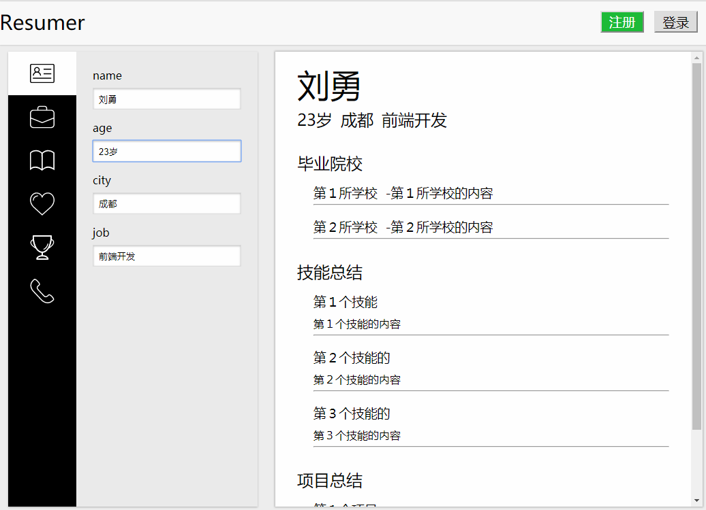
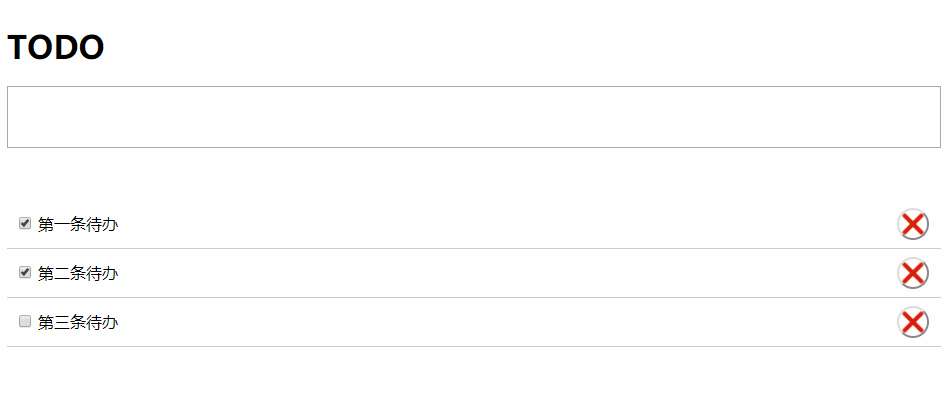
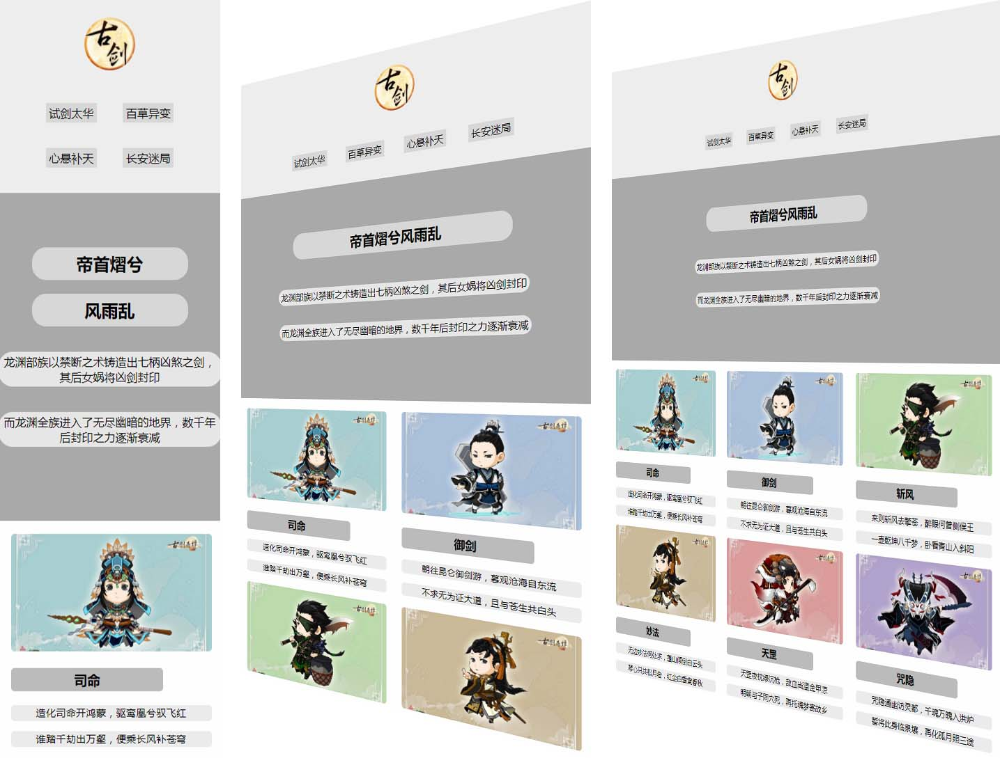
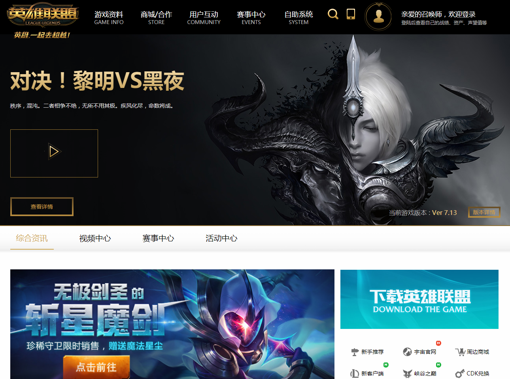
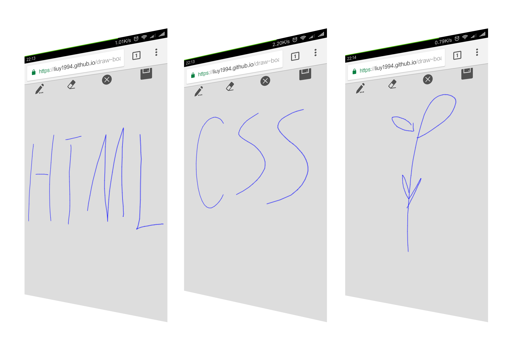

个人介绍
意向职位：前端开发
年龄：23岁
手机：18512850896
城市：成都市
2012.9 ~ 2016.6 —— 长安大学（本科）
热爱生活，性格乐观，每天都充满正能量
热爱技术，对于不熟悉的方法充满好奇
热爱学习，努力提升自我，完善自我
看电影，听音乐，减肥，持续减肥
项目介绍
-
1、仿网易云音乐移动端
移动端网页版网易云音乐，实现按曲名或歌手搜索、歌曲播放和暂停、歌词滚动等功能
以Leancloud 为数据库，通过函数节流处理搜索框请求重复发送问题
不同分支分别使用gulp、webpack处理文件
技术栈：原生JS、jQuery、leancloud、gulp、webpack
(预览请使用移动端模式)
-
2、在线简历编辑器
基于Vue.js的在线建立编辑器，快速生成一份完整的简历，部署于leancloud
能够实现个人简历信息录入、保存，账户注册、登录，使用Vuex进行数据管理
技术栈：Vue.js、Vuex、webpack、Leancloud
-
3、todo应用
一个操作简便的基于React的todo应用
以localStorage为数据库，添加、删除待办事件
技术栈：webpack、react
-
4、响应式布局+懒加载
利用媒体查询在不同尺寸的屏幕上显示不同的布局
原生JS实现懒加载、自动加载下一页
技术栈：媒体查询、纯CSS、Flex布局、原生JS
-
5、仿英雄联盟网站首页
桌面端静态页面，像素级还原网页
组件包括顶栏悬挂、轮播和Tab等
技术栈：原生JS、Flex布局、jQuery、CSS
-
6、原生JS绘制小黄人
纯CSS绘制一个小黄人
使用原生JS进行DOM操作，一步一步绘制
技术栈：原生JS、CSS
-
7、cavas画板
移动端网页版绘图工具
能够进行清除、删除、保存等操作
技术栈：原生JS、Canvas
(预览请使用移动端模式)
技能总结
-
1、静态页面制作
熟练使用Flex 布局、CSS 2布局以及CSS 3动画
像素级还原设计稿，并以响应式适应各种尺寸的屏幕
-
2、移动端页面制作
采用动态REM方案适配各尺寸手机屏幕
熟悉手机端页面开发，用浏览器模拟不同幸好、不同尺寸手机端的页面调试
-
3、原生JavaScript
理解基本概念，如原型链、闭包、作用域链、Promise异步、this 等
能够使用原生JS 将代码按功能封装成DOM 库
了解模块化，能够使用gulp、 webapck、 RequireJS 打包代码
-
4、配合后端开发
熟悉自动加载、懒加载以及预加载等页面优化策略
了解HTTP 协议、 AJAX 请求
了解两种跨域策略：CORS 和JSONP
-
5、热爱学习
乐于学习新的技术(不仅限于前端)
可以适应长时间单纯而不枯燥的学习
大学英语四级(CET4) 证书，能够阅读英文文档